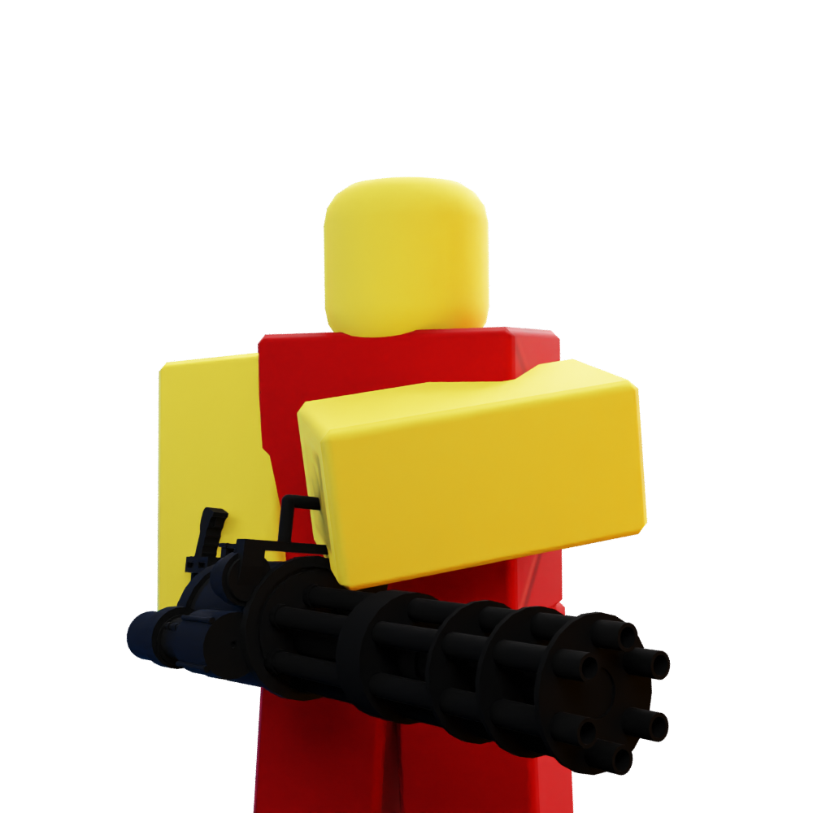
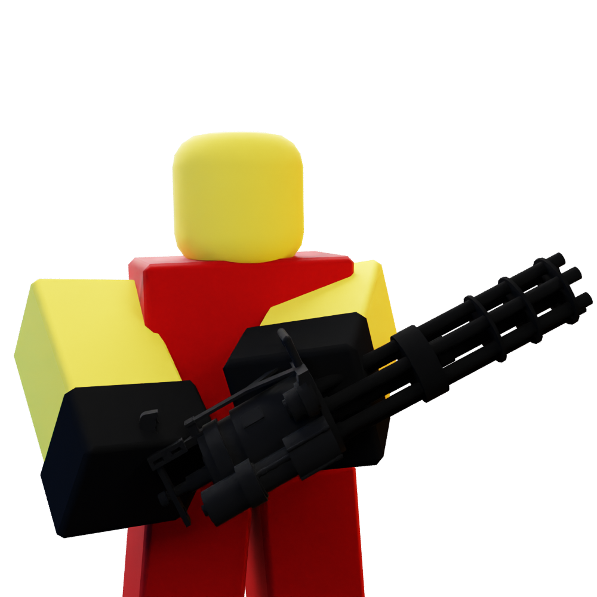
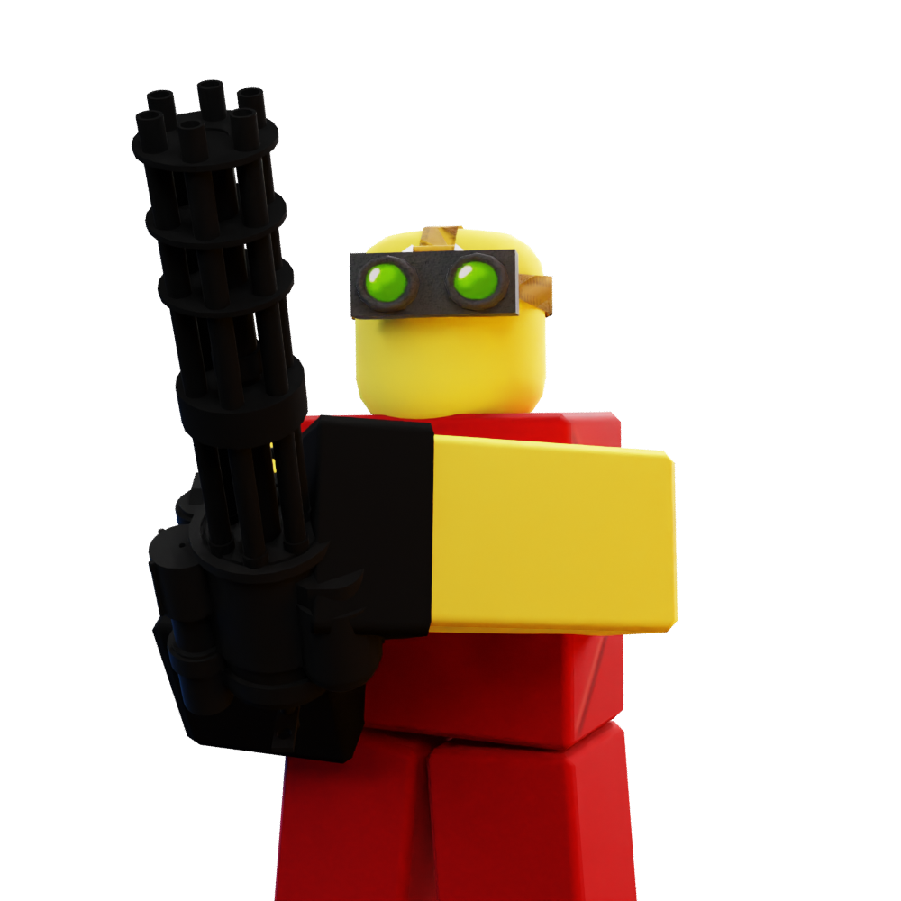
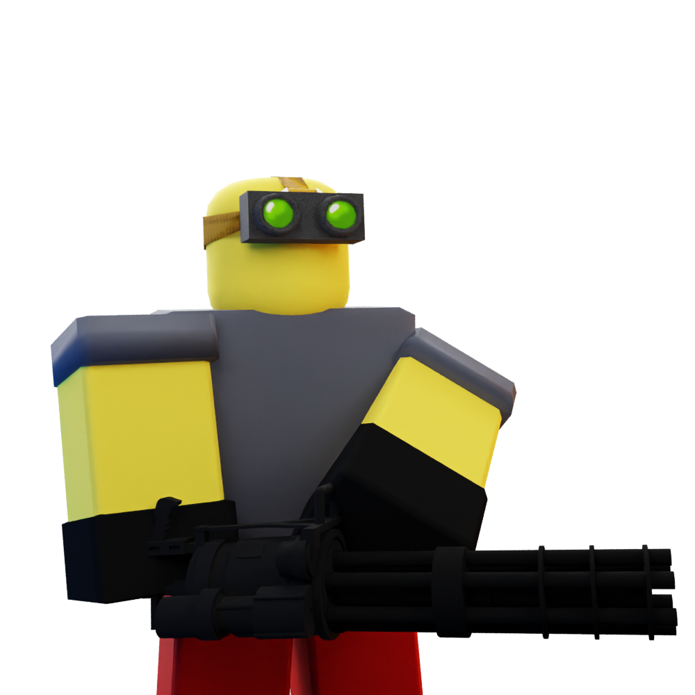
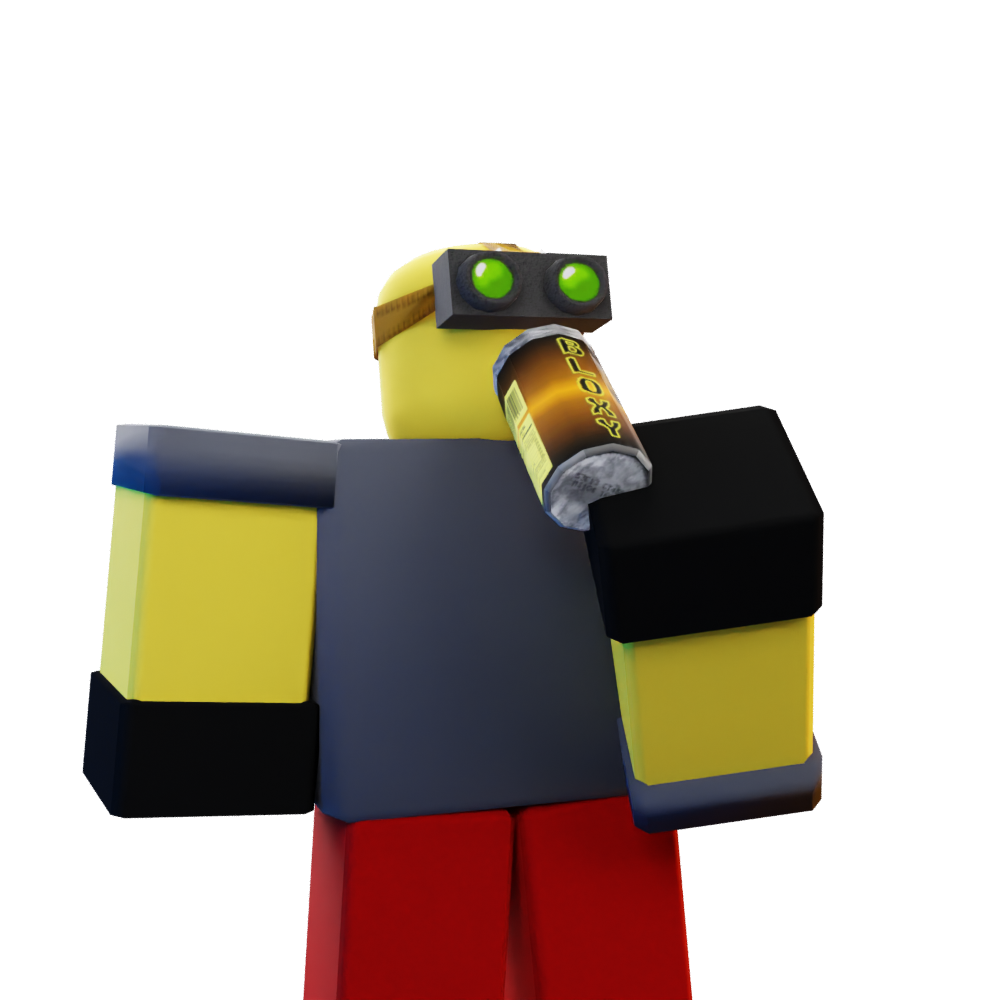

Heavy Gunner
Heavy Gunner
|

|
| Unlock Cost |
1000 |
| Level Required |
5 |
| Base Cost |
$1800 |
| Damage |
1 |
| Damage Type |
Single |
| Range |
20 |
| Placement |
Ground |
The Heavy Gunner is a single target tower. At Level 1, the Heavy Gunner fires every 0.1 seconds, with a
range of 20 and dealing 1 damage per shot (10 DPS). It costs 1000 Tix and requires 5 level to purchase.
Appearance
The Heavy Gunner appears as a red tower, wielding an M134 Vulcan Minigun.
Upgrades
Level 2 - Gloves 
Cost: $525
- Range increased from 20 to 23. (+3)
- Cooldown decreased from 0.1 to 0.08s. (-0.02s)
- DPS increased from 10 to 12.5. (+2.5)
- Heavy Gunner now wears gloves.
Level 3 - Goggles 
Cost: $750
- Range increased from 23 to 25. (+2)
- Heavy Gunner now has hidden detection.
- Heavy Gunner now wears goggles.
Level 4 - Heavy Equipment 
Cost: $3500
- Damage increased from 1 to 3. (+1)
- DPS increased from 12.5 to 37.5. (+25)
- Heavy Gunner now wears metal armor.
Level 5 - Bloxy Cola 
Cost: $13000
- Range increased from 25 to 30. (+5)
- Damage increased from 2 to 6. (+4)
- Cooldown decreased from 0.08s to 0.065s. (-0.015s)
- DPS increased from 37.5 to 92.31. (+54.81)
- Heavy Gunner now has a Bloxy Cola.
Trivia
- The Heavy Gunner is inspired from the Commando from Tower Battles.